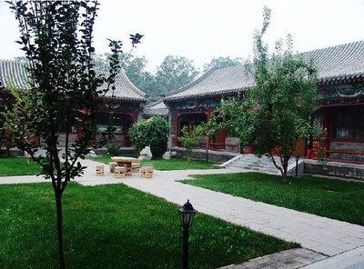

体现在大门、大窗、大进深、大屋檐，给人以舒展的感觉。大屋檐下形成的半封闭的空间，既遮阳避雨，起庇护作用，又视野开阔，直通大自然。大气，最充分地体现了中国传统建筑"天人合一"的思想。
体现在琉璃材料的使用。它寿命长，颜色鲜艳，在阳光下耀眼夺目，在各种环境中富丽堂皇。其较高的成本，象征着财富和地位。
中国建筑的传统d的重要特点--重山林风水。中国历代的职业风水先生，去除迷信成分，可称得上是选址专家。 有山，易取其势，视野开阔，排水顺畅;有林，易取其物，苍柴丰盛，鸟鸣果香;有风，易得其动，空气清新，消暑灭病;有水，易得其利，鱼虾戏跃，鹅鸭成群。故此，若靠山面水，侧有良田沃土，阳光充沛，兼有舟楫之便，当然是公认得宜于人类生存得最佳选址。 中国传统建筑不仅重自然的山林风水，也重人工的山林风水，让人工的与自然的谐调，院内的与院外的衔接，造成"天上人间"之境，使人产生"此中有真意，欲辨已忘言"的心旷神怡之感。 中国传统建筑的这个特点，体现了"天人合一"的思想，这一思想恰恰与现代人"回归大自然"的欲望相吻合。可见，重山林风水的传统思想必将在现代建筑设计中得以发扬、发展，以创造优美的建筑环境，实现大自然的回归。
徽派建筑以粉墙黛瓦、马头墙为表型特征，以砖雕、木雕、石雕为装饰特色，以高宅、深井、大厅为居家特点。
中国古典园林空间主体的构成要素是由地形地貌、水文地质、乡土植物等多种自然资源构成的乡土景观类型。乡土材料的精工细做，园林景观的意境表现，是中国我传统的园林的主要特色之一。中国古典园林主要强调的是通过自然来表达人的认识和感受，所以有“源于自然而高于自然”的要求。

四合院的特点：1、四合院是由东、西、南、北四面房子围合起来形成的内院式住宅。2、形制规整，中心对称。3、游廊相接，私密性较强。4、外形中规，用法灵活。四合院，又称四合房，是中国的一种传统合院式建筑，其格局为一个院子四面建有房屋，从四面将庭院合围在中间，故名四合院。
